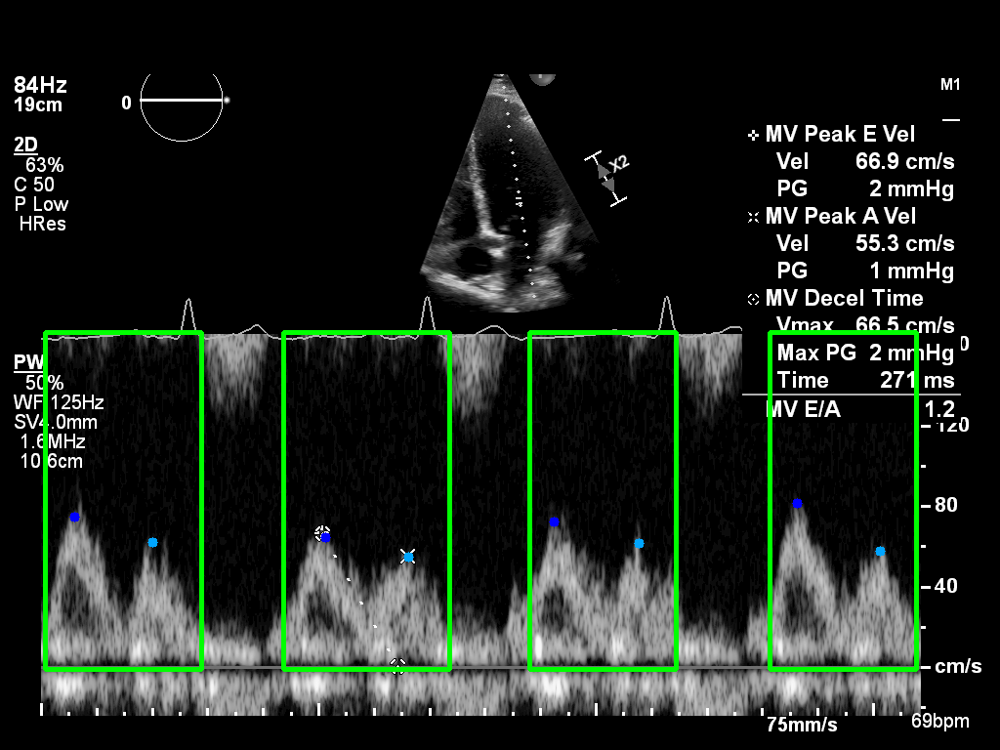
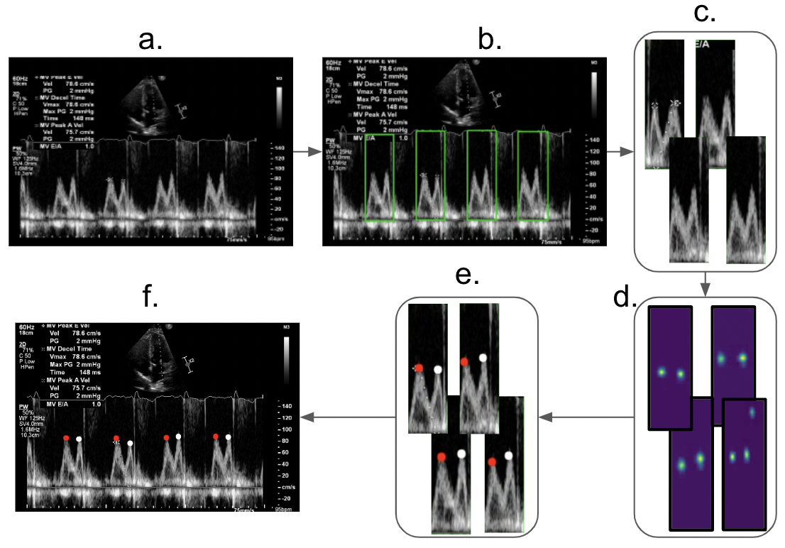
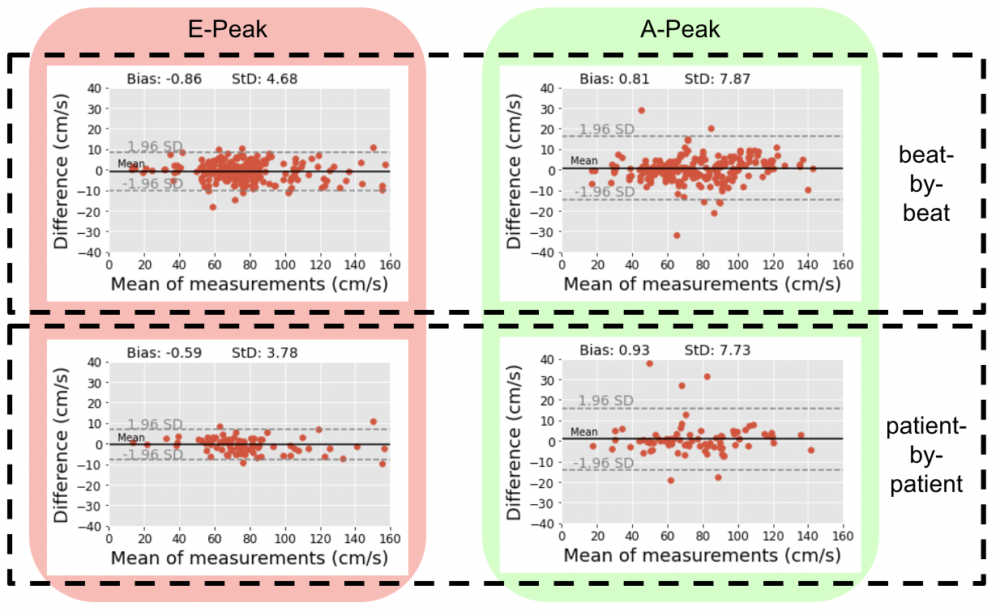

Automated Analysis of Mitral Inflow Doppler using Convolutional Neural Networks
Abstract
Doppler echocardiography is commonly used for functional assessment of heart valves such as mitral
valve.
Currently, the measurements are made manually which is a laborious and subjective process.
We have demonstrated the feasibility of using neural networks to fully automate the process of mitral v
alve inflow measurements. Experiments show that the automated system yields comparable performance to
the experts.

Introduction
Transmitral Doppler echocardiography has become the primary mode of noninvasive assessment of
diastolic filling and function. The physiology of ventricular filling is reflected by the transmitral
Doppler velocity profile which is comprised of two distinct components (waves); the E-wave (early phase
ventricular filling) and the A-wave (atrial phase of ventric- ular filling)). Accurate analysis of
Doppler echocardiographic images is therefore of crucial importance. Current clinical practice requires
sonographers to manually perform velocity measurements on Doppler traces , which often results in high
intra- and inter-observer variability. Automated systems could help
standardise measurement protocol and reduce the amount of time spent on these measurements, thereby
improving clinical workflow.
A random sample of 500 echocardiographic examinations of different patients was extracted from
Imperial College Healthcare NHS Trust’s echocardiogram database. The acquisition of the images was
performed by experienced echocardiographers and according to standard protocols, using ultrasound
equipment from GE and Philips manufacturers. Ethical ap- proval was obtained from the Health
Regulatory Agency (Integrated Research Application System identifier 243023). Mitral inflow Doppler
images were then annotated manually by expert cardiologists, selecting the E- and A-wave peak
coordinates. DICOM-formatted images of varying image sizes images were zero-padded to the size of
1024x1024 pixels. The cardiologist’s annotations of the images were used as the ground truth (400 for
training, and 100 for testing).
A schematic diagram of the full deep learning pipeline is illustrated in Figure 1. In order to
detect/isolate heartbeats, Faster-RCNN object-detection architecture was used. All over- lapping
bounding box predictions are processed using non-maximum suppression method. Predicted bounding boxes
with probability over 70% are then passed to a landmark detec- tion model based on architecture
proposed in (Wei et al., 2016). The predicted heatmaps are then used to extract the location of the E-
and A-waves for all the heartbeats present in the Doppler image. TensorFlow was used to implement the
models, running on Nvidia RTX3090 GPU.
Shih-En Wei, Varun Ramakrishna, Takeo Kanade, and Yaser Sheikh. Convolutional pose machines. In
Proceedings of the IEEE conference on Computer Vision and Pattern Recog- nition, pages 4724–4732,
2016.

Figure 1: Full pipeline. a) Original Doppler image as input with no pre-processing. b)
Faster-RCNN detects/seperates every heartbeat present in the image. c) Isolated heartbeats are
cropped. d) Landmark detection model predicts heatmaps. e) E- and A-wave peak points are obtained
from the heatmaps. f) Peak velocities from all heartbeats are put back on the Doppler image.
Results
Figure 2 upper row shows Bland-Altman plots for the pool of heartbeats across all patients. Bias for
the automated measurements versus the expert measurements was less than 1 cm/s for both E- and A-wave
peak velocities. The lower row shows the same plots, but for a patient-by-patient analysis, where all
heartbeats present in a Doppler image for each patient are averaged. The standard deviation in both
beat-by-beat and patient-by-patient analyses for the A-wave was larger; indicating that this peak was
harder to detect/measure than the E-wave. The image datasets, code, and trained networks
generated/developed in this study are made freely-available for future benchmarking.

Figure 2: Bland-Altman plots for automated vs. manual measurements.
Request Access to the project dataset
We aim to make the dataset available for research purposes soon.
If you wish to request access, please complete the form below: